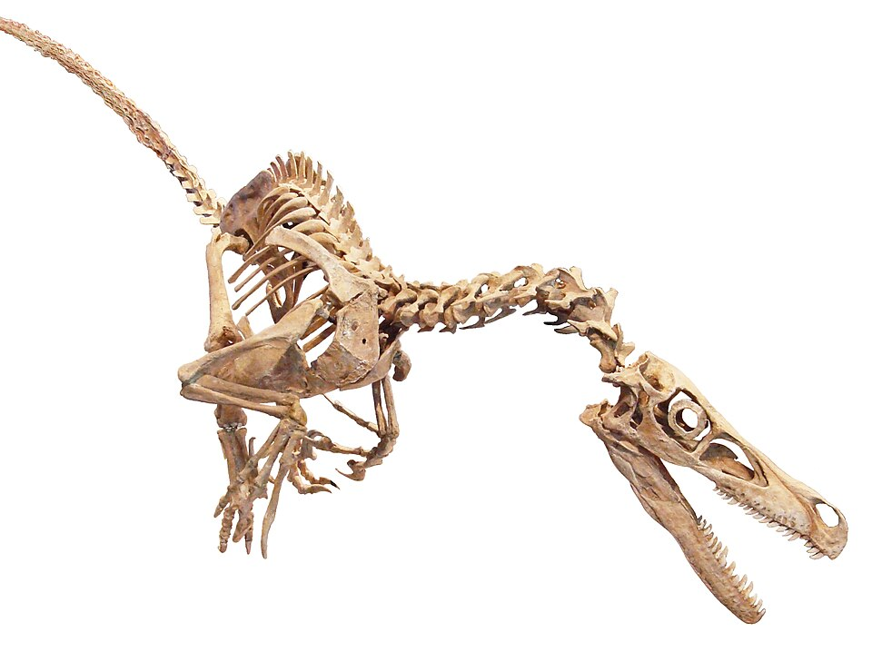

Tyrannosaurus rex
Spinosaurus

(Spinosaurus) adalah dinosaurus karnivora terbesar yang pernah berjalan di Bumi, hidup di kawasan Afrika Utara pada
pertengahan periode Kapur sekitar ( 99 hingga 93,5 juta tahun lalu ).Dinosaurus raksasa berukuran panjang
hingga 15 meter ini memiliki ciri khas berupa "layar" raksasa di punggungnya yang terbentuk dari perpanjangan tulang belakang,
serta moncong panjang mirip buaya yang dipenuhi gigi runcing. Sebagai salah satu dinosaurus semi-akuatik pertama yang ditemukan,
Spinosaurus menghabiskan sebagian besar waktunya di dalam air untuk berburu ikan raksasa, menjadikannya predator perairan purba yang sangat unik.
Brachiosaurus

( Brachiosaurus ) adalah dinosaurus herbivora raksasa yang hidup pada akhir periode Jura,
sekitar 154 hingga 150 juta tahun lalu di wilayah yang kini menjadi Amerika Utara. Dikenal secara harfiah sebagai
"kadal lengan" ciri khas utamanya terletak pada kaki depan yang lebih panjang daripada kaki belakangnya, menciptakan
postur miring mirip jerapah dengan leher tinggi menjulang. Struktur tubuh yang unik ini memungkinkan Brachiosaurus
menjangkau vegetasi di puncak pohon tajuk tinggi—seperti pohon konifer dan ginkgo—yang tidak dapat dicapai oleh dinosaurus lain.
Dengan panjang tubuh mencapai (20 meter dan bobot diperkirakan hingga 50 ton),
raksasa ini menjadi salah satu hewan darat terbesar yang pernah menjejakkan kakinya di Bumi.
Tyrannosaurus rex

( Tyrannosaurus rex, atau T-Rex ), adalah salah satu predator darat terbesar dan paling
mematikan yang pernah hidup di Bumi pada akhir periode Kapur, sekitar 68 hingga 66 juta tahun lalu di wilayah
Amerika Utara. Raksasa karnivora ini dapat tumbuh hingga panjang 12 meter dengan bobot mencapai 8 ton,
didukung oleh rahang raksasa dan puluhan gigi bergerigi sepanjang 30 centimeter yang sanggup menghancurkan
tulang mangsanya dalam sekali gigitan. Meskipun memiliki lengan depan yang relatif sangat kecil dengan
hanya dua jari, T-Rex mengompensasinya dengan kekuatan gigitan paling dahsyat di antara hewan darat,
penglihatan binokular yang tajam, serta indra penciuman luar biasa untuk melacak keberadaan mangsanya.
Sebagai predator puncak di ekosistemnya, T-Rex aktif berburu dinosaurus herbivora besar seperti Triceratops
dan Edmontosaurus, menjadikannya simbol keperkasaan dunia purba yang paling terkenal hingga saat ini.
Stegosaurus

( Stegosaurus ) adalah salah satu dinosaurus herbivora paling unik dan mudah dikenali yang hidup pada akhir periode Jura, sekitar 155 hingga 150 juta tahun lalu di wilayah Amerika Utara dan Eropa.
Ciri khas utama dari reptil berkaki empat dengan panjang mencapai 9 meter dan bobot hingga 5 ton ini adalah deretan pelat tulang tegak di sepanjang punggungnya, yang berfungsi untuk mengatur suhu tubuh (termoregulasi) serta sarana pamer visual.
Untuk melindungi diri dari serangan predator puncak seperti (Allosaurus), Stegosaurus mengandalkan empat duri tulang tajam sepanjang hampir satu meter di ujung ekornya yang dikenal sebagai (thagomizer ).
Memiliki postur tubuh menunduk dengan kepala kecil dan kapasitas otak yang relatif sangat mungil, dinosaurus lambat ini menghabiskan waktunya merumput vegetasi rendah seperti tumbuhan paku, lumut, dan sikas.
Velociraptor

( Velociraptor ) adalah dinosaurus karnivora lincah yang hidup pada akhir periode Kapur, sekitar 75 hingga 71 juta tahun lalu di wilayah Asia Timur, khususnya kawasan Gurun Gobi.
Berbeda dari gambaran populer di media layar lebar, dinosaurus dari famili ( dromaeosaurid ) ini sebenarnya berukuran relatif kecil—hanya seukuran serigala besar dengan panjang sekitar 2 meter
, tinggi 0,5 meter di pinggul, serta tubuh yang dilapisi bulu mirip burung modern. Ciri khas paling mematikannya terletak pada cakar melengkung berbentuk sabit yang tajam di jari kaki belakangnya, yang digunakan
untuk mencengkeram dan mengunci gerakan mangsanya. Dipadu dengan kemampuan berlari cepat, pandangan mata yang tajam, serta tingkat kecerdasan yang tinggi untuk ukuran reptil purba, Velociraptor merupakan pemburu
kecil yang sangat efektif dalam memangsa reptil, mamalia purba, hingga dinosaurus pemakan tumbuhan muda.